第3章 学理研究
3.1 混沌的冬日
3.1.1 序
1962年，美国海洋生物学家 Rachel Carson 出版了《寂静的春天》，这本书展示了农药污染下没有虫鸣的春天。在其影响下公众开始关注环境污染问题并开启了环境科学研究的序幕。然而，国内公众对于环境污染的关注也许并不用等到春天。近几年，每每国庆刚过，雾霾就会几次三番的席卷全国，呈现出混沌的冬日。

有人说发展的问题会在发展中解决，例如发达国家也经历过类似的阶段，但伴随产业转型与法规调控，污染问题都会自然而然地消亡；又有人说虽然城市会被雾霾笼罩，但从统计数据上看居民平均寿命其实比所谓田园风光的乡村更长；还有人说大气污染相比土壤、水还有固废污染都不算严重，只是可见度更高（也就是能见度低）……的确，雾霾这个现象背后有着错综复杂的社会经济影响，从不同的角度去看会发现不一样的东西。多一个角度看问题并不会让你过的更好，但至少更明白些。
下面我将给出一些非技术与法规调控的视角，希望对读者理解雾霾以及其他一些环境污染问题能有帮助。
3.1.2 研究增长的极限

上图是生物资讯数据库 Pubmed 上用颗粒物（particulate matter）作为关键词得到的论文数量，一百年来可以说是持续增长，特别是21世纪以来增长尤为迅猛。但需要注意的是到2015年达到了峰值（3429），16年已经明显下降（3134），今年还有两个月（2348），但不出意外也不会超过16年。至于为什么会有少量18年文献（26），这是学术界硬通货论文的通货膨胀，透支未来可以说是现代社会最伟大也最危险的发明，学术界亦然。也就是说，对于颗粒物的研究兴趣实际已经在降低了。
这个现象可能有点反直觉，因为近几年大气环境污染的公众关注度非常高，经费投放也很可观，但学术界却降低了学术交流频次。无独有偶，使用传统研究热点例如汞、铬、二恶英、基因组、纳米颗粒去进行检索，都会发现研究在2014-2015年间出现了峰值。但同时如果去看一些新兴研究例如3D打印，颗粒物中的细颗粒物（fine particulate matter），则增长还是非常迅速的（下图是以细颗粒物为关键词的文献发表状况）。

如果把学术界所有人的研究精力看成是总量稳定的，那么论文数可以看成精力的指标，对于包括大气颗粒物在内的很多环境研究课题而言，学术界正在把蛋糕切给更新的技术与概念。同样是进行雾霾研究，如果你从事微米尺度研究，而学术界却更加认可纳米尺度的研究，那么你的文章就很难发表，然后就是经费紧张，如此循环；进而使得新概念也不断变成老概念。
就颗粒物研究而言，目前学术圈总体关注度已经在下降，但分支中却有上升的。那么可想而知，学科内存在激烈竞争，并不是所有的颗粒物研究方向都是热点。而且还可以预期的是少数研究方向的异军突起会吸收更多学科内的研究资源，很多优秀的研究人员可能一开始选错了研究方向，最终的结局就是转行。研究的增长极限是客观存在的，所以如果你在这个年代打算去找专家咨询，最好去问上升期的新人，因为很多概念从出现到流行不到三五年，有经验的专家反而可能因为有学科内竞争关系而给出带有其自己都意识不到的感情色彩的论断。
3.1.3 有原罪的雾霾
如果某天PM2.5爆表，然后你又恰好感觉到嗓子不舒服，那么很自然你会认为这是雾霾的锅。这符合情理，但不一定符合事实，雾霾跟健康是有联系的，但跟健康有联系的可不仅仅是雾霾。即使仅仅考虑大气污染，颗粒物也只是能够产生爆表AQI的一个因素，其余的例如工业主导的硫酸型烟雾或汽车尾气主导的光化学烟雾都会影响健康，都能让嗓子不舒服，此时你会把原因归到哪里？
进一步讲，环境因素也只是影响健康的一个方面，遗传也起作用。假如你在雾霾天听到一个有气管炎家族病史的患者在咳嗽，你会认为是环境影响还是遗传作用？而根据最近Science的一份研究，即便你排除掉环境因素与遗传因素，仅仅是新陈代谢过程中DNA的复制次数就可解释癌症的发病率的66%，而这个过程根本就无法用先天后天因素来解释，就是个生长问题。
在中国，雾霾是有原罪的，它实际承载了社会转型期人们的一部分焦虑。如果其对健康的总影响是十，那么其中真实作用可能也就二三，替遗传和其他污染物背了三四的锅，还有三四则可以说是心因性的。今年柳叶刀上一篇文献就提到，中国PM1跟PM2.5大概贡献了医院急诊的4.47%与5.05%。这种研究有两个问题，第一，即使排除了意外导致的急诊（例如车祸），就诊行为本身就会受天气影响；此外就是 type M 型错误（效应数量级错误），也就是说这个效应是真实的，但是影响不一定大。
这其实是目前环境研究的一个通病，找一组病人和一组正常人（有的连这个也省了）采集样本，然后一把测定几百上千种污染物（这个现在技术上是没问题的），然后算相关系数，这种情况随机你都可以发现几个的，而这样做出的发现有个通病，那就是效应通常不大，很难重现。一个小而真实的效应或许有学术价值，但舆论一放大就会产生公众心理焦虑，而心理状态又会影响生理状态，这类影响可能并不比真实影响小。
雾霾是有原罪的，但被过度聚焦了，由此产生的焦虑与恐慌本身也会产生健康影响。如果公众可以更好理解科学研究现状与其中的问题，这并不能客观降低空气污染的健康影响，但在实际意义上却可能减轻雾霾的心因性副作用。
3.1.4 万金油的幻象
不知道从什么时候开始，万金油的心态重新出现了。以前如果我告诉你有一种方法可以让你永远远离雾霾危险，你肯定说我瞎扯。好，现在我换一种说法，在人工智能+区块链+可穿戴设备+大数据的实时监控下，我可以给你一副智能眼镜，上面会实时反应你现在的风险指数，如果指数超过80%，那么你就应该进入室内。逻辑上来说，如果你按照超过指标就躲到室内，那么这个风险永远不会变成100%，也就是说，这跟我刚才说的永远远离雾霾危险实质等同，但是这样的产品你多半不会觉得是瞎扯，甚至会愿意付高价购买，这又是为什么？
万金油思维从来都没远离过我们，只是从熟悉的名词变成了看似专业的术语。人们有一种看起来很理性但又很荒谬的行为：乐观而盲目地相信着未知的科技。雾霾来了，那就买个最好的空气净化器；外面看不见了，那就来个3M口罩；嗓子不舒服了，那就去搞点清肺的保健品。其实很多人都知道这些科技可能还不成熟，但只要花钱了就有种事情完结可以甩锅的想法。真实的情况往往是越是大家关注的事物，就越有人去贩卖这种包装过的万金油，你买到的更多只是一个确定性的心态。

在这个分工细致的现代社会里，绝大多数的服务业出售的都是经过专业化包装的确定性，用来抵消分工后一颗颗螺丝钉无法感知全局的焦虑。雾霾就是个全局问题，涉及很多不同专业的知识，当个体被复杂性搞晕时，最简单的方法就是掏出一把钞票买个心安理得。即使问题不能在当前根本解决，但生活总要继续，或许这就是万金油思维在进化上的意义。在雾霾这种大IP下，科学家、政府、骗子、掮客、投机商你方唱罢我登场，过分认真你就输了。
3.1.5 混沌的冬日
回溯千年，宋代诗人陆游在《秋霁》中提到:“驱除云雾极知难”，除了难在技术与法规，雾霾也是直指人心的。
看看窗外，凛冬将至

作者：yufree 编辑：栟
3.2 幻化残生
幻化残生，也就是环境、化学、材料跟生物这四大学科的近似谐音，都属于实验比例比较高的专业。这些专业的研究生生存现状都——并不乐观。
3.2.1 现状
首先，这四个学科属于建立在脑力劳动之上的体力劳动。例如前处理、过柱、表征、养细胞、涂板子、野外采样等等，流程性非常强，到时间点上不论节假日还是凌晨饭点都得待命；但有时又会发现这些工作找个本科生带上两天也能做出来。一个尴尬的事实是，实验学科一个重要研究方向就是取代人工操作实现流程自动化与便携化，当实验简单到轻轻一按时，研究生训练得到的技能瞬间贬值，更尴尬的是实现这个过程需要的背景知识是物理、机械跟电子工程而不是幻化残生，掌握某项实验技能短期可以使你取得不错的成果，但长期看几乎一定会过时。
其次，特别拼先进仪器/技术，进而导致平台建设重于人才培养。今年这个技术能发顶刊，明年就可能被取代了；有些特殊资源例如光源没有背景想约个机时难得要命，但如果不进行一些高开支实验可能编辑就直接拒稿；而先进仪器装备的价格往往奇高，所以从经济角度，这四个学科都属于很烧钱的。那么这里的尴尬就是，你的才能可能受限于仪器平台；而从研究机构角度看，投资仪器显然比投资人才培养在初期更有效果，而人才培养初期其实也就是仪器操作。这个没啥办法，现在很多科学问题的回答其实早就脱离了理论导向阶段，而是我有一个问题想回答，但目前技术回答不了，也就是假设早就有了，就等着新技术检验。你去看这些年诺奖，很多是技术获奖而不是理论获奖。也就是说，实验学科比起人才更需要仪器平台资源。

再次，这几个学科产业转化基本停留在前言里，毕业后除了年龄比同专业本科生大了不少，在满足业界要求上本质区别并不大，这进一步导致本应分流到业界服务社会的博士硕士继续留在学术界造纸，而想从学术界熬出头你看前人经验借鉴意义不大。很多人没考虑时代造就的红利窗口期而大谈特谈自己的奋斗，但要知道此一时彼一时，目前学术界的门槛比10年前高了很多，同样的奋斗强度10年前进高校很容易，现在可能去做博士后都没人要了。如果本科转行也就算了，但到了博士转行就真的是在奉献青春了，当然这可能是无法避免的。
3.2.2 前景
我们其实可以把做学术类比创业公司，博士学位前都是导师投天使轮，博士后相当于找风投，找到教职算是有投行介入吹喇叭，常任轨留下来才算上市。论文就像每年的财报，表现不好还可能停牌退市，当然不上市被收购做小老板也行，但那时候学术方向就会完全被大老板把持了。这个过程就是现状，目之所及很多人迷迷糊糊就上道了，而其中沉淀下来的所谓“人生赢家”却没有一个是迷糊的。这里我建议读下 Philip Guo 在斯坦福刚拿到博士学位后写的《The Ph.D. Grind》，虽然他是搞计算机科学的，但对幻化残生的研究生了解整体学术圈现状还是很有帮助的，很多观点也会有共鸣。

此外，我也可以给出一个基于估计的现状，如果成为院士（中国科学院／中国工程院）算达到学术巅峰的话，那么院士的选拔可以看作到达顶峰的路径。选拔方法是什么呢？两年一次，一次总共大概150人，工程科学对半分，平均一年75人。我们假定若干年后每年还是75人，且平均看每一年参与竞争的都是同年级的博士同学。而目前每年全国土鳖博士毕业生6万多人，算上海归，同一年龄组大概7万人应该比较合理。那么你看到了，你需要在同年级博士毕业生里成为千分之一的精英才算有希望。
这个似乎有点丧气，可能院士这个比较难搞，那么准院士的杰青呢？全国每年选拔200人为杰青，那么成功概率乐观估计是千分之三，杰青其实也很难了，我们再放宽到优青。全国每年选拔400人为优青，那么乐观估计成功几率大概是千分之五。我们大胆认为博士中有一半人毕业后不再从事科研工作，那么几率翻倍成为优青也要是百里挑一。即便是成为教授／研究员，我估计概率也是小于5%的，这个基数不是所有人，而是跟你同级的博士。

所以其实我挺理解很多劝博士毕业转行或毕业不做学术的看法的，那怕你手握博士学位，在国内想走到教授也是个p<0.05的事，大概20个人里有一个。考虑到一般博士同学同院系大概也就是20个人，如果学术水平不在前面，基本可以重新考虑下人生规划了，因为此时你选择科研就真的需要兴趣激发了，不然身边的落差会折磨你几十年。而且上面的估计有个严重的问题，那就是大量使用了均匀分布，但真实的情况却是极不均匀分布，你的师承关系跟毕业院校都会把这个分布搞得更加极端，而且后发者优势在科研里面非常常见。同时，目前教职数目趋稳，如果你没赶上窗口期大爆发，基本就是这个竞争强度了，只会更强不会更弱。具体到幻化残生这四个学科中的环境，虽然国家很重视，但在杰青或优青的名单中每年能分到多少个这都是一个巴掌数的过来的，各位可自行倒推下看看竞争强度。如果眼光放远些，其实别的学科的竞争压力也好不到哪去，但对于知识迭代比较快的幻化残生，很多压力与鸿沟可能你没毕业就已经出现了，更糟的是你毕了业才发现。

3.2.3 求索
这些现状经常搞得研究生自身怀疑人生，看着转行金融、咨询、IT的同学心有不甘；即便可以用学术理想充实的生活把自己隔离在实验室内，但走出实验室的柴米油盐变量太多，控制不来。同时，你又会很惊奇地发现，这些年报道的学术界年轻有为的青千、优青与各路人生赢家基本都是这四个学科的；而且从经费分配跟论文影响力上看，这四个学科也是超级大户；再从经济学角度去看，你会发现围绕这四个学科的仪器、耗材甚至样品测定跟论文润色服务都已经形成了成熟产业链，行业利润十分惊人。注意，这些产业是对科研进行支撑的而不是业界，如果只是这些行业高速发展而产业界没有起色，那事实上是在用纳税人的经费吹肥皂泡，不会长久。
这并不奇怪，实验学科的知识与技术更迭速度是非常快的，从走进实验室那一刻，你就会发现师兄师姐用的技术学校里根本就没教过或仅仅做了个展望，系统的学习基本上都被传帮带模式替换。如果你自己不去问为什么，大概率你师兄走的弯路你还得走一遍，你师姐画不出的图你也画不出来。更尴尬的是，有时候你会发现，如果你的想法是属于排列组合出来的，那么其实仪器公司完全可以替你做，他们不做并不是不会，而是等着收服务费，你发你的纸，我赚我的钱，各取所需。在这个场景下如果还没意识到自己的民工本质，那大概率是要做一辈子民工的。
曾经有人提过学术界存在生态位，大家各做各的相安无事，但这个想法现在看比较天真，因为现在竞争者基本都不是来自学科内，而是其他学科的入侵，如果这个问题你自己学科的人搞不定，别的学科就会过来。例如做材料的发现一种新材料，如果你觉得意义不大不掺合短期没啥问题，但做材料的表征完了得找应用出口啊，环境、生物、化学都有，技术有自己的生命力，总有人会转过去。你是无法约束某种研究只去关注自己学科内的问题的，事实上这可能是目前科学进步的一个范式：个别学科突破，带动其他学科发展。
基础学科对新技术的接受度要快于应用学科，一个常见的模式就是某个数学模型首先应用在物理领域，然后化学，然后生物，然后是边缘综合学科例如环境、医学，然后就是社会科学。当然也存在某些从应用角度出发的模型后来被应用到其他领域，金融与生命科学中经常出现这样的案例。但你应该发现一个问题，要想解决现在的问题，通常老路是不通的，要么回归基础学科，要么从别的学科借鉴，不论哪一种都需要你持续学习新知识，特别是外学科知识。有一个最简单的办法就是你去看看那些最聪明的人在用什么，然后想想能不能用到自己的学科框架里。

实验学科的发展有时候是很残酷的，初期势必牺牲掉一批掌握过时技术的研究生，这个国内外都很常见。通常国外业界会吸收一部分且通过较成熟的职业教育与培训体系来解决问题，国内则是依靠学术界大面积收留；这个问题的后果就是现在很多教授对于学生无力指导，看到概念就回来让研究生试，研究生自然苦不堪言，毕业后就业方向非常窄。但同样是实验学科，高能物理、生物统计的毕业生转行就相对容易些，因为可以去做码农，至少生活水平对得上学位。而很多实验学科的研究生对此并不感兴趣，甚至完全不懂，思想上停留在努力实验发论文拿教职的简单规划上，不喜欢接触社会就只接触仪器。这其实是最大的偷懒，科研是需要脑力持续投入的，如果是实验学科还要加上体力。不但要持续学习，还必须要主动学习，关心前沿，而这又与繁重的实验任务竞争着的研究生们的精力。在前沿知识的探索中没有固定的方法与理论，经验主义横行，也恰是前沿科研的魅力所在，混杂了无穷的乐趣与苦涩。
3.2.4 前沿
学科前沿是一个很模糊的东西，对幻化残生而言，教科书上的实验技术是一定落后于科研的，此时对学术前沿的感知往往要么来自文献，要么来自会议或培训，坦白说，这两个方法都具有很强的主观性，夹杂很多人的小算盘。好比你想在微信里打开淘宝链接，不是不行，就是要通过复制过程恶心你一把，但其实这种经验过程你也没啥办法。
除此之外，还有一个方法是各种文献信息学指标，例如H指数，被引率等等，但这些指标属于后验指标，你得至少等文章发表过去两三年才能开始评价，但这两三年中也会有一大把新趋势出现。另外一个方法就是自己当期刊编辑或审稿人，其实这个是很多教授的独门秘笈，因为你会比其他人早好几个月知道新研究的动向，但研究生拿到的审稿机会本来就少，高水平期刊更是不会找研究生审稿。所以其实对于很多研究生而言，想了解前沿跟他人的研究动向几乎不可能，而根据我的观察，如果同行坐到一起聊天你对新动向一无所知，那么对方也就不会在你身上浪费时间了。有些出版方跟研究机构也会发布一些热点文章，但多数基于编辑经验，并不一定准确。一个相对靠谱的方法是借鉴搜索引擎排序的思路，通过文本分析的角度从统计模型上探索趋势，这里并不是说那种通过词云这类描述性统计量，而是基于主题模型、时序分析等手段的探索分析，但手段其实是次要的，是服务你的问题的，如果问题没搞清楚，用什么都是错的。

其实，对于幻化残生的研究生而言，主动了解科研趋势只是一方面，了解你自己才是更重要的。当你觉得不好时，不要总是怪罪时代跟环境，也想想自己身上的问题；当你一帆风顺时，不要总觉得这是自己勤奋与努力的结晶而忘记了科研浪潮的背后推手。随波逐流不会过的太差，但放弃思考是绝难在学术界生存下来的，不要真的幻化残生了。
师兄只能帮你到这了，剩下的，我也没想明白。
本文首发于我的科学网博客（yufree），改编首发于环境黑板报。
作者：yufree 编辑：栟
3.3 北京的空气变好了，但是……
早在2009年，美国驻华大使馆便自设空气监测站，并对外发布PM2.5数据。而直到2011年以后，随着微博、微信等自媒体的蓬勃发展，一些微博大V、微信公众号开始关注并转发美国驻华大使馆的空气监测数据。这引发了公众强烈热议，什么是PM2.5也成为一时关注焦点，环保等相关政府管理部门也不得不对此有所回应。2013年，国务院发布《大气污染防治行动计划》（就是所谓的“大气十条”），提出十条具体措施，明确经过五年努力，全国空气质量总体改善。而北京随后制定了《2013-2017年清洁空气行动计划》，明确了到2017年底PM2.5年均浓度控制在60微克/立方米左右的“京60”目标。
——写在最初
今年，是“大气十条”的收官之年，北京市空气质量是否明显好转？“京60”的目标是否已经实现？带着这些问题，我们采访了北京某环境监测部门的工程师及中科院某所大气环境研究人员，并对北京市市民进行了街访。
3.3.1 北京的空气质量到底变好了没有？
北京某环境监测部门工程师(以下简称“监测部门”)：从总体上来看，北京市空气质量呈现逐年转好的态势。以PM2.5为例，自2013年开展监测以来，2013-2016年PM2.5年平均浓度分别为89.5、85.9、80.6和73.0微克/立方米，下降的趋势非常明显。
根据北京市环保局发布的监测数据显示，2017年1-10月份，北京市PM2.5累计浓度为64微克/立方米，同比下降8.6%;空气质量达标，也就是我们所说的“1级优”或“2级良”天数172天，同比增加11天。这些数据均体现了北京市空气质量正逐年好转的特征。
下图是2013年1月-2017年10月北京市PM2.5日平均浓度的热度图（单位：微克/立方米），我们可以看出，这几年，PM2.5高浓度天数确实在减少，低浓度天数在增加。

中科院某所大气环境研究人员(以下简称“科研所”)：空气质量变好还是变坏，污染物的浓度水平是一方面，污染物的成分变化更需要我们的关注。
举例来说，在1998年，北京主要遭受严重的燃煤和机动车排放混合型污染。自1998至2013年的15年期间，我们国家主要在燃煤电厂的脱硫脱硝技术方面做了很大的改进，使酸雨问题得到了控制。

而且，这15年期间，北京的CO、SO2、NO2和PM10的年均浓度均有显著下降，下降比例分别为58%，78%，24%和42%，尤其是CO和SO2基本稳定在国家空气质量标准值内。
但是，为什么最近几年，雾霾的问题反而更严重了呢？高效的除尘工艺只对粒径大颗粒物具有良好的去除效果，对于数量浓度较高的细小颗粒物去除率还有待提升。尤其在高湿环境下，大气中的多种污染组分如NOx、O3和光照条件促进SO2和VOC等的均相和非均相反应，促进新粒子的生成及细粒子的老化，形成成分复杂的较高浓度的细颗粒物（PM2.5）飘散在空气中，可由呼吸道直接吸入肺部，增大对人体的危害程度。同时，这些细小的颗粒物对阳光的吸收散射增强，降低大气能见度。
这几年随着环保力度加大，尤其是“大气十条”的落实，京津冀、长三角、珠三角PM2.5的浓度比2013年同期分别下降了38.2%、31.7%、25.6%，下降幅度均大幅高于考核标准。“京60”目标也有望实现。
近几年，VOC的排放呈显著增长趋势，或许会成为未来大气污染治理的又一难点。
小编言：随着我们环保治理力度的不断加大，北京空气中PM2.5确实在不断减少，蓝天的数量在不断增加，我们政府下了大决心，打了场胜仗，但是空气质量是否真的变好了，可能还有待研究。
3.3.2 目前，对于PM2.5浓度评价的标准使用的都是均值，如2017年，北京年均值达到60微克每/立方米左右，这样设置是否合理？
监测部门：目前的标准，使用的是均值，每日空气质量评价参考的是日均值，年度目标的完成情况参考年均值。各行各业很多和实际生产生活相关的标准都不需要特别精细化，虽然说设立置信区间能够更精细化，但是在当前的实践中可能比较有难度。标准就是个标尺作用，要满足大部分需要，在满足日常需求上，我认为用均值就够了。不过科学的标准更应该是根据人体健康效应来设置。
科研所：我不认为均值是一个很好的统计量，打个比方，如果只用一个标准值去衡量，那就相当于默认均值背后的分布或者污染特征是一样的，但实际数据的分布并不一样。如果能够精细化一些，可能会更加准确，说服力也更强一些。当然，这也是当前科研出现危机的一个例子，现实的复杂并不适合用简单统计量来描述。

现在环境监测能力越来越强，获得的数据越来越丰富，加上越来越先进的数据处理手段，有实现精细化展示的可能性。标准的制定最好通过置信区间来定义，例如考核指标改为90%的分时浓度区间，也可以考虑工作日与双休日制定标准。
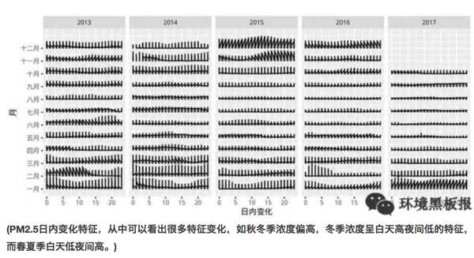
小编言：均值作为标准，应用和管理起来或许会很方便，但是会隐含一些我们看不到的分布特征，而这些特征对于精细化管理大有裨益。
3.3.3 按照《北京城市总体规划》（2016-2035年）要求，到2020年PM2.5浓度下降到56微克/立方米左右，对此，您持何种态度，判断依据？
监测部门：我对此还是持乐观态度的，主要原因为：(1)目前的高压态势环保治理已经成为常态，而不是部分时期采取的临时措施，污染源减排力度将会持续加大。(2)国家正积极加大能源结构调整，目前清洁能源的使用率和使用范围越来越大。(3)民众的环保意识越来越强，自身参与环保的行动也越来越多。在政府和民众的不懈努力下，北京市PM2.5浓度会越来越低。
科研所：对于这个观点，我持乐观态度。首先，政府、民众都很关心，科研人员也在污染源解析、气象模式预报、大气污染追因等方面做了很多的研究工作。其次，治理污染需要一个过程，在2015年以前，重点在酸雨的调控，近几年，重点在PM2.5的调控，未来还有VOC和O3问题也需要解决。根据目前的数据和政府的决心来看，我是持乐观态度的。
小编言：对于未来，我们多是持乐观态度，一方面我们对现在的政府充满了信心，“绿水青山就是金山银山”理论正在引领新实践，另一方面我们自身也深感美丽生活环境的重要性，环保意识不断增强。
听了政府监测部门和科研机构人员的回答，我们已经感受到了政府和研究机构在改善北京空气质量方面所做的努力。那么作为北京市居住的老百姓，作为空气质量改善的最直接受益人，他们的感受是怎么样的呢?
3.3.4 您好，您觉得北京的空气变好了吗？
蓝天：感觉今年蓝天确实比去年多了，是不是跟今年风多有关系啊。不过也听说最近环保搞的力度挺大，又是督察又是巡查的，空气污染严重还问责，今年还轰轰烈烈的搞了煤改气，听说周边农村里煤不让烧，气供不上，挨冻了都，好在听说环保部紧急发文，让一些没改好的地方接着烧煤。今年天儿好可能这些治理法子还是起了作用吧。
白云：感觉今年重雾霾好像是好了一点，以前雾霾严重的时候，窗户外面都几乎看不见。其实我对雾霾真是没怎么关注，感觉对自己影响不大，主要是考虑到孩子，希望每天都可以看到蓝天，这几年的雾霾让人有些麻木了吧，到哪里看到雾霾都不觉得吃惊了，反而连续出现蓝天倒是觉得不可思议。
青山：这个我还真关注了，毕竟跟咱北京人儿息息相关么。北京现在空气肯定是在慢慢变好，但是大家感觉不强烈。感觉政府宣传的不好，一方面是老百姓不信，另一方面政府没有转变思维，还是封堵，而不是疏通，预警措施也不够。
3.3.5 按照目前北京市环保局网站公布数据，北京市今年很有可能达到年均值60微克每立方米左右，北京市空气质量逐年改善，您对此怎么看？
绿水：其实吧，我不清楚60微克是啥概念，天天听人说，也没有人科普过，如果说就是雾霾好一点，今年感觉是比去年强点，但要说强多少，也没有吧，前两天不还雾霾来着。
阳光：达标能怎样，数据可以求平均值的，总共有个30天极其严重，而其他天数全是好的，一平均不就是好了，但是老百姓的感官还是不好的。
鲜花：恩，现在政府抓环境抓的紧，我们那片好几个小工地都关了。政府立了指标，老百姓就好监督嘛。而且现在市长是搞环境出来的，又是从环保部过来的，我觉得在改善北京空气方面，还是能有所作为的。
小编言：看来，民众的感受也是因人而异啊，不过总的来说，政府的努力还是得到了认可，民众提出质疑的同时也对政府对科研部门寄予了厚望。

经过几年的努力，北京的空气改善明显，但是否有新形式的污染物出现危害公众健康，是否在目前认为的质量改善背后隐藏着其他的隐患，作为政府工作人员还是科研工作者亦或是你我，都仍需负重前行，不忘初心。
作者： 次要男主角 校稿：周宁，王小咖 图片：yufree 编辑：竹而乐
3.4 一滴水的故事
曾几何时，一滴水随着千万个同伴出现在这个星球。他们开始塑造这个星球，改变着地貌，孕育着生命。人类从出现的那一刻起，就开始了与水相爱相杀的历史。从两河流域的空中花园到尼罗河流域的金字塔，从马拉松的烽火到牧野之战的硝烟，水，孕育了地球最初的文明。同时，人类早先的传说，从诺亚方舟到大禹治水，又无处不在昭示着人类对水的敬畏。
水与人类的相爱相杀一直在进行着。有一滴水躲在茶壶里变成了蒸汽，告诉一位叫瓦特的人这样的力量可以推动机器运转，于是推动了轰轰烈烈的工业革命；有一滴水和同伴们一起构成了江、河、湖、海，让人类可以物流南北、货往东西，文明的火种得以靠水传播。
人类使用着水，也污染着水；净水养育着人类的同时，污水却时刻威胁着人类，这样的相爱想杀更是直接催生了我们的专业——环境科学与工程。此刻我们对水充满敬畏，毕竟水撑起了整个产业链上的勤劳的人们。水进入大气在不利的气象条件和污染物参与的情况下，形成雾霾，这一点我们在《混沌的冬日》里已经写过；水进入城市，若无法正常下渗、排除，则形成内涝，这直接催生了海绵城市的建设思路，这一点我们在《城市之殇》中已经展现；即使不听话的、因污染而变坏的水，工程师们不死心，坚信每一滴水都是清纯的，于是我们人类建立了污水处理厂，通过活性污泥法和生物膜法等工艺，使受污染的水改头换面，还清还纯，而这在《污师私房菜》中，我们也有所提及。
地球的水储量是巨大的，然而淡水资源却是如此的稀缺，环境工程师们在累死累活守护净水的同时，一个“开源”的灵感开启了水资源的另一段神奇之旅：
3.4.1 海水淡化
海水淡化方法主要分为热法和膜法。
热法：海水的盐度很高，直接饮用只会越喝越齁，但早在公元前1400年，海边的居民便学会了在锅内把海水加热到沸腾，使海水蒸发变成水蒸汽，盐分留在锅底成为垢，并使水蒸汽遇冷成为可饮用的蒸馏水。这也是今天常用的蒸馏法海水淡化的原型。而现代常用的热法海水淡化主要有多级闪蒸和低温多效两种。
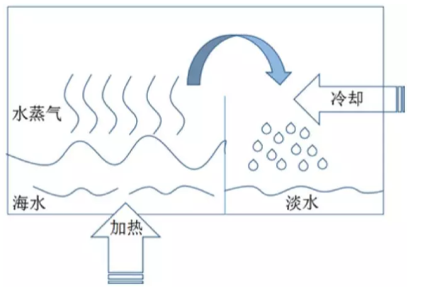
膜法：1950年美国佛里达大学瑞德（C.E.Reid）教授在无意间发现了一个奇怪的现象。他观察到海鸥在海上飞行时从海面啜起一大口海水，隔了几秒后，吐出一小口海水，这个现象引起了他的思考。后来经研究发现，海鸥体内有一层薄膜，该薄膜非常精密，海水被海鸥吸入体内后，经过压力作用使水分子穿透薄膜转化为淡水，而含有杂质及高浓缩盐分的海水则吐出嘴外。于是，受此启发，瑞德教授提出了反渗透的基本理论。反渗透膜如同一只特殊的过滤筛子，在压力下过滤掉了水，而留下了盐（看到这里我觉得瑞德教授至少不是一个喜欢吃野味的人）。运用这一原理，我们就可以利用反渗透膜从盐水中获取淡水了。

我国人口占世界22%，淡水占有量却仅为8%，世界排序名列109位，是世界上12个严重贫水的国家之一。而海洋中蕴藏着丰富的淡水，其总量约占海水的97%，相当于13.3亿立方公里之多，是一个巨大而又稳定的淡水储库。海水淡化作为水资源的开源增量技术，具有稳定供水、应急供水和战略性供水的特点，是解决沿海水资源短缺问题的重要途径。笔者收集了我国沿海地区人均水资源情况，发现沿海地区由于经济发展水平和人口密度较高，缺水情况反而高于全国平均水平，形成了靠水没水的情况。海水淡化成为了一些沿海地区解决缺水问题的关键手段之一。

我国海水淡化的历史始于上世纪五十年代。至2015年，全国总产能已经超过百万吨，约为全球海水淡化总产能的2%左右。随着经济的发展，我国在国际海水淡化市场的比重逐渐增加。如下图所示，我国在这一年的产能增长约为中东地区的一半左右。中东地区存在一些自然条件上的限制，促使他们更加积极地开发海水淡化技术，因此中东地区历来是海水淡化最重要的市场，所以我们国家海水淡化产能比不过这些土豪真的不丢人。
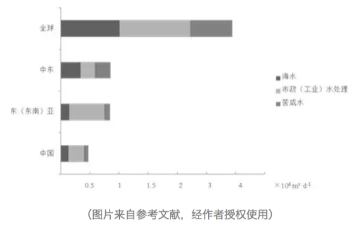
目前我国已建的海水淡化产能主要集中在辽宁、天津、河北、山东等北方省市，这四省市产能占我国海水淡化总产能的81.9%（2014年数据，见下表）；与此对应的是不同省份对于海水淡化的关注度，下图是来自海水淡化的网络搜索指数，排行前五分别是北京、广州、浙江、江苏、山东,从中不难看出，海水淡化的关注度和接受水平也与地区的经济发展状况息息相关。
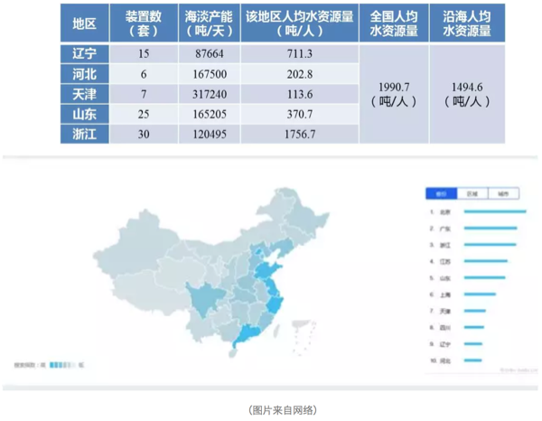
2016年12月，国家发改委和国家海洋局联合印发的《全国海水利用“十三五”规划》指出，到“十三五”末，全国海水淡化总规模拟达到220 万吨/天以上，其中沿海城市新增海水淡化规模105 万吨/天以上，海岛地区新增海水淡化规模14 万吨/天以上。而海水直接利用规模拟达到1400 亿吨/年以上，海水循环冷却规模达到200 万吨/小时以上。新增苦咸水淡化规模达到100 万吨/日以上。海水淡化装备自主创新率达到80%及以上，自主技术国内市场占有率达到70%以上，国际市场占有率提升10%。相信未来海水淡化会有更快的发展。海水淡化项目在某种程度上是一种基础建设项目，与各级政府的施政方向密不可分，所以虽然国家出台了一系列的规划政策，具体落地还是需要很长一段路。
3.4.2 后记
2010年，我们像一个一个水滴汇入了中科院这个汪洋大海，拥有了这片汪洋大海里的化学物质。随着时间的推移，我们又流到了其他地方，在各自的岗位上吸收了新的化学物质。不同物质间的反应总能产生新的物质，所以我们决定讲我们的源，讲述我们每一滴水的故事。
作者：yy 校稿：胜利屯支书，看透 编辑：栟
3.5 可持续社区建设案例——北京当代MOMA公寓
可持续发展是一个比较容易引起人们困扰的概念，从1987年《我们共同的未来》出版以来，可持续发展的概念已经走过了三十年。目前全世界人们最公认的可持续发展的核心思想就是“既能满足当代人的需要，又不对后代人满足其需要的能力构成危害的发展”。
2015年6月5日，联合国发布了题为《Transforming our world by 2030: A new agenda for global action》的报告，这是联合国首脑会议对于2015年之后全球发展的整体规划和展望。可持续发展目标的设立源自于被全世界人民所认可的可持续发展理念，以消除贫困和不平等、保卫地球、创建包容经济增长空间为基础构架，由17个总目标和169个子目标共同组成了一整套覆盖社会、经济、环境三个关键维度的全世界发展目标。
其中，目标11为可持续城市与社区，以建设包容、安全、有抵御灾害能力的可持续城市和可持续的人类居住社区为核心目标。在可持续城市与社区的大目标之下，设计了7个子目标和一个整体目标从多个关键方面提出了在城市和社区尺度可持续发展的要求，如住房与交通的需求，城市建设力度的要求，城市对人类的负面环境影响如空气质量、城市废弃物等的要求，以及城市居民能够在社区中享有足够的绿色公共空间和社区服务的要求。

社区是一个非常有意思的概念，当我们以人类聚居的角度去看，社区可以看成是城市最基本的组成单元，也是连接城市和单体建筑的人类聚居栖地，不同于家庭的血缘聚集性，社区是用一个划定的区域把一群没有血缘关系形形色色的人类和一堆单体建筑圈定在了一个概念里，在社区里往往能找到一个城市的大部分商业和社会服务功能，也能看到城市生活的最完整的缩影。在大多数情况下，城市的政策和举措需要在社区层面得到落地和实施。
我们现在日常居住的居民小区、商业楼盘甚至早一些年的街道居民委员会管辖片区，都是最为常见的社区。随着城市社会经济的不断发展，社区可以涵盖的概念也越来越广泛，商业与居住型公寓并存的CBD区域、特色产业园区及周边物业、甚至是特色小镇，谁又能说这些都不是社区的代表？这些新型地产类型的兴起，也从另一个方面极大的丰富了社区的概念，也让可持续社区的建设与实践越来越具有现实的意义。可持续社区的理念强调现在和未来、生活和工作、安全性和包容性，生活品质和环境保护等统筹协调，规划合理、建设和运营良好，为社区居民提供平等的机遇和优质的服务。
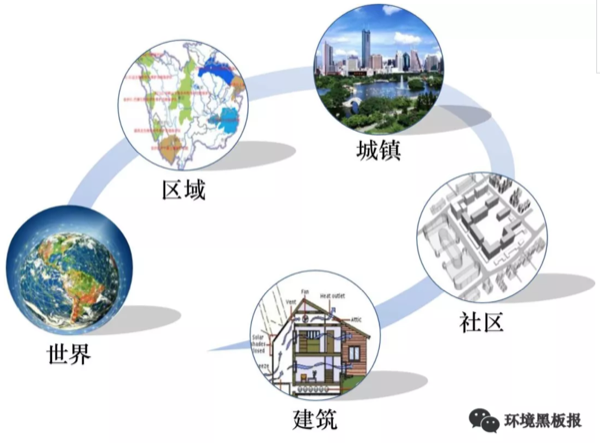
当我们讨论如何去建设可持续社区的时候，一定会有一个问题始终萦绕在设计者、建设者、管理者和居住者的心头，那就是，什么样的社区是可持续的？
嗯，负责任地告诉你，这个问题，其实全世界的研究学者、政府和企业想了三十多年其实也没有非常的想明白。为什么呢？可持续发展本身就是一个没有最好只有更好的概念，基于可持续发展的概念延伸而来的一系列的理念和要求，都在不断地要求着更加优化的发展方式。节能的要更加节能、贫困消除的要不断富裕、性别平等的要更加平等，等等等等。所以，当我们考虑可持续社区的建设实践的时候，其实就不要太纠结于到底怎么样是可持续的了，换个角度想一想，什么样是不可持续的，然后尽力避免是不是一个更为简洁的思路呢。
因而，可持续社区的建设，很多时候是遵循着避免不可持续性的思路来进行实践的。在可持续社区建设实践中，有这么几个点是比较值得关注和注意的，同时也可以看成是一个社区建设“从摇篮到成长”的生命周期，从社区建设的空间布局开始，就要求以能够持续发展的思路和原则进行设计，建筑及室内环境建设、室外环境建设、基础设施建设是从社区的实际建设方面的可持续性要求，而当社区建成之后，居民生活方式引导和社区运营管理的可持续性就是社区成长成熟过程中的可持续性的体现。

在可持续社区的建设实践方面，大家还是走的比较靠前的，毕竟嘛，物质基础的建设总是比精神层面的提升要来的简单一些。目前国内可持续社区相关的指标主要来自于发改委、住建部和环保部，大部分指标规定了可持续社区当中的某一个或某几个部分，而并非是可持续社区的全部内容。社区的可持续性主要聚焦于社区生态环境的可持续性，对于社区的社会系统和经济发展的可持续性的要求相对较少。从可持续的理念出发，社会公平、经济繁荣、环境优美是可持续社区三个必不可少的关键点。联合国环境规划署与佳粹（中国）环境发展促进中心共同发布的《可持续城市与社区评价标准导则》，是参考了可持续发展目标11，并同时借鉴国际标准化组织在社区可持续发展指标体系以及国际最佳范例，提出的有参考价值的发展目标、关键绩效指标和国际化考量标准，《可持续城市与社区评价标准导则》导则关于可持续社区的评判包括六个方面：可持续建筑；包容的社区服务与设施；宜居的社区景观；经济生产力；安全；自豪、高知社区。

来看一个栗子吧。
3.5.1 北京当代MOMA高端综合公寓
北京当代MOMA高端综合公寓，不仅包括若干栋公寓住宅，还有影院、图书馆、酒店以及各种餐饮、娱乐中心，生活设施与休闲商业都非常完备的一个社区，为什么拿它来做一个可持续社区建设的例子呢，因为有人这么评价它的，“它构建了一个新的社区模式，将城市空间从平面、竖向的联系进一步发展为立体的城市空间，并大规模使用可再生的绿色能源，既节能又省地。它也探索了一种未来城市的生活新模式，将居住、工作、娱乐、休闲、交通结合在一起，通过空中连廊交错相连，必然加强邻里间的联系与交流。从建筑学上讲，我们依稀看到大师理念的传承与发扬，从社会角度讲，它为中国的21世纪居住树立了一个新的典范。”这是可持续社区的一次很有意思的探索实践。
在社区建设初始的设计中，以一副珍藏在俄罗斯圣彼得堡历史遗产博物馆内的镇馆画作为创意灵感（“野兽派”画家马蒂斯创作于1910年的画作《舞蹈》），同时加以北京“胡同”与“四合院”为改造元素，设计出空中连廊作为公共空间，以打造“城中之城”设计概念展开。通过连环的空中长廊将8栋公寓建筑连接在一起，加上一栋艺术酒店和一座多功能水上影院，构成一个立体的建筑空间。在建筑的外立面采用磨砂氧化铝板减轻高密度、大体量建筑的压迫感。整个社区的设计焦点是穿越空间的体验，将大楼之间的动作、时机和序列整合考虑，视点随着缓坡、转弯改变。而电梯的转换，更犹如电影里的切换镜头，从一个楼层到更高楼层的通道，平移过一些不同变化的周边景色。

在社区的具体建设中，有非常多的可持续性理念的体现，这个社区以“永续建筑”的理念来践行了建筑本体的建设和施工，主要包括恒温恒湿、新风置换、地源热泵、中水处理系统等。这些体现建筑可持续性细节的系统设置，更多的是从居住者的切身感官出发，保证着每个人在房间里都能感受到一种舒适的环境，恒温恒湿和新风置换系统就是从体感上给居住者这样的舒适享受。同时，当代MOMA的这些系统设计还遵循着可持续性对于资源节约和因地制宜的要求。
恒温恒湿系统采用预埋管材的水循环系统，来保证室内温度常年保持在恒定的22-26℃，不仅不会破坏室内装修，甚至连风和噪音也感受不到。这样通过水循环系统来打造室内恒温恒湿的居住环境，不仅能让居住者感受到最极致的体验，更是一种非常节约能源和水资源的方式。
新风置换系统是将经过了过滤、除尘、灭菌、控制温度和适度的新鲜空气从房间底部的送风口送入房间，经过室内循环之后从房间顶部的排气孔排除，利用空气上升的自然原理，不仅杜绝了空气之间的交叉污染，也是以非常节能环保的方式保证了即使在北京大雾霾天的情况下也能实行对室内空气质量的要求。
地热源泵采用的复合式能源系统，是通过地下100米以下的垂直换热器以矩阵的格局分布在地下车库的地板下，与土壤进行热交换后再向上传递供热或者供冷，将对周围环境的影响降低到了最少，并且充分地利用了地下温度，几乎接近于可再生能源。
中水处理系统采用膜生物处理的技术，将社区内每天产生的大部分厨房以及洗浴废水作为中水水源，处理之后全部回用于社区商业、影院、图书馆以及部分楼座的冲厕用水，剩余的用于绿地灌溉、道路浇洒以及景观补充水等。

在社区尺度的可持续性建设中，有非常非常庞杂的关键节点和细节可以体现，从能源节约、资源利用、废弃物处置等诸多实际的物质节约的诉求，到社会公平、社区和谐、环境友好等精神层面的追求，无一不体现着可持续发展目标。限于篇幅，我们就重点了解了一个可持续社区在设计和建设方面的可持续性的体现。我们能看到，可持续社区的建设其实是渗透在社区生活方方面面的一个持续性改善过程，从国家和城市的规划布局，到社区建设的具体实践，再到社区居民身体力行的改善，每一个角色都对可持续社区这个目标的实现贡献着自己的力量。这其中，诸多标准帮助规范着社区建设的实践行为，价值导向指点着社区居民的日常生活，而城市上层的整体规划是引导可持续社区建设实践的方向标。
作者：爱杯子的王小咖 校稿：yufree，大石 编辑：兔 配图：爱杯子的王小咖，栟
3.6 小秸秆，大问题
2017年11月，演员孙艺洲拍戏途径哈尔滨，被郊县烧秸秆的烟熏味儿呛到流泪，随后在微博上抱怨：为什么一个白天空气质量优良的城市到了夜晚就空气爆表?为什么?怎么办?这个问题并不算新，但当它被一个拥有一千多万粉丝的耿直boy问出来的时候，还是结结实实触到了很多人的痛处。

在哈尔滨，把孙艺洲呛到流泪的是秸秆焚烧产生的颗粒物。每年秋收以后，庄稼被打捆、加工、再被送到每个人的餐桌上，算是完成了自己的历史使命;但秸秆这种副产品却被留了下来。
在田间地头，常常可见成垛的玉米或者小麦秸秆，勤快点儿的农户，将其垛得整整齐齐，也算是道风景;懒一些的，堆放得毫无章法，影响观瞻。
其实这个时候农民是真的忙。每年10-11月，是我国 “秋收秋种”期，各级农业部门一级战备、高度紧张，密切关注天气变化和降雨量，一轮又一轮的“紧急通知”，为的是指导农民收得时机合适，种得不早不晚。因为只有这样才能保证丰产丰收。
我们大东北黑土地在这个时候是收玉米种小麦，秋收整地追求“深、净、细、实”，小麦播种要在适宜播种期抢播早播。收下来的玉米秸秆无处可放，尽管我国80年代起就出台各种秸秆禁烧的相关规定，禁烧态势越压越重，但比起秸秆处理的经济压力和劳动力需求，很多农民不由自主就选择用“一把火”解决问题。
不烧不行啊，秸秆太多了。1991年我国秸秆产量为6亿多吨，经过了粮食总产量的“十三连丰”，到2015年，秸秆产量为10亿多吨。多出的秸秆总量为4亿多吨!什么概念呢?如果把这4亿多吨秸秆以100根为一扎首尾相连，能绕地球赤道转325000圈……

不烧不行啊，农民家里实在没人。壮劳力都出去打工了，只剩下老人和孩子，尽管乡里承诺可以集中处理，那也需要把秸秆运输到集中处理点，老人孩子不会开车，没有工具，再好的政策也解不了眼前的急。
但烧秸秆的确是后患无穷。农作物光合作用的产物有一半以上保留在秸秆里，它富含氮、磷、钾、镁和有机质，秸秆大量集中燃烧的过程也是一种剧烈释放能量和物质的过程，周围环境根本无法在短期内消纳这么多的释放物，大气污染因此产生。
跟燃煤锅炉引起的污染不同，秸秆焚烧的主要产物是颗粒物、一氧化碳、二氧化碳等，对城市和乡村的低空空气影响更为直接。然而在大气污染研究领域，秸秆燃烧对雾霾的贡献一直颇有争议。
撇开具体贡献率不谈，稍加研究便可发现：在10月和11月的秋收期，从华北到东北(每年秸秆主要燃烧区)，雾霾符合低硫份、高悬浮颗粒物、连片集中爆发的特点。
换句话说，叠加了大规模的秸秆焚烧，使得轻中度采暖季雾霾立刻升级为大范围重度雾霾。环保部10月期间的卫星遥感巡查监测数据分析表明，在16个省(区)共监测到疑似火点1583个，比2014年同期增长74.5%，也的确证实了秸秆燃烧对雾霾的推波助澜“功效”。
所以，怎么办才好?秸秆问题和我国的大多数农业问题一样，工程浩大、解决起来困难重重。
目前秸秆的综合利用工作虽在稳步推进，但仍存在很大问题：一是秸秆还田成本高，运营公司与农户缺乏主动性;二是农民缺乏必要的技术支持，导致秸秆无法真正实现废物利用。
就东北地区来说，冬季气温偏低，秸秆还田要想充分被土壤消纳，必须使用进口农机深度翻耕，进一步增加了还田成本和土壤压力。说白了，东北地区黑土地耕作土层只有20厘米，想翻耕30厘米好让还田秸秆快速腐烂，需要钱，需要时间，需要人力，需要对新茬农作物减产的心理预期。
与这些困难形成对比的是，政府部门越来越强硬的禁烧手段。自1997年起，我国开始重视秸秆禁烧和综合利用工作，到2008年明确农作物秸秆综合利用分工、确定综合利用比例，再到2014年重拳出击京津冀及周边地区，提出部分地区全部实现秸秆综合利用的目标，禁烧力度越来越大。
进入2015年以后，我国出台了“史上最严”大气污染防治法，明确了县级人民政府应该补贴支持秸秆收储运和综合利用服务，并规定：露天焚烧秸秆的，可以处五百元以上二千元以下的罚款。

为了彻底杜绝火点，在大气污染防治法的框架下，有些省份开出了自己的处罚清单。河南省在增加督查和暗访的基础上，以环保部公布的秸秆焚烧卫星监测火点数为依据，以县(市、区)为单位，出现一个火点，省财政扣拨县(市、区)财政资金50万元，力度之大空前绝后。
秸秆问题逐渐进入人们的视线并得到如此重视，除了它与雾霾之间千丝万缕的联系之外，还因为它的确是农业和环保领域牵一发而动全身的节点。
一根秸秆，一头连着三农，一个敏感脆弱又是万事之本的领域，一头连着环保，一个同样是成长痛点难点的行业。不能烧，但也不能接受粮食减产!粮食减产，根基没了，中国人民要挨饿;烧秸秆，污染加剧，人民叫苦连天。相信很多民生问题都是如此。
好在中国人民是世界上最勤快的人民。纵观其他国家，在面对这个问题的时候农民往往是两手一摊，对执法人员说“我没办法呀!”……毫无悔改之意。
美国作为一个重要的粮食输出国，直到2011年在中部和东南部仍有大量火点发现，可比我国东北严重多了，有NASA图为证。印度人民更是开挂，烧着秸秆接受记者采访，大大方方毫不避讳。
秸秆的五料化利用技术(肥料化、饲料化、基料化、燃料化、原料化)并不高深，而秸秆问题的处理方式千差万别，对应效果天壤之别。

解决秸秆问题，一个靠重视，一个靠财政。回看我国，重视程度和经济投入力度都需更进一步。
2007年，美国政府投资1.25亿美元建设了3个生物能源中心，专门进行纤维素生物能源研究。同年，美国农业部出资1400万美元、能源部出资400万美元，共同设立基金研发生物燃料、生物能源及相关产品的研究与开发。
据统计，2008-2012年，美国政府对生物质研发法中涉及的项目共计投资了1.18亿美元。除了对研发环节和支持外，美国对可再生能源发展规定了技术开发抵税和生产抵税的措施，生物质发电和秸秆纤维素乙醇项目都享受响应的税收补贴或者减免。
对比我国，2016年，农财两部门整合资金10亿元，选择秸秆焚烧问题较为突出的10个省份开展秸秆综合利用试点，取得了初步成效。果然真金见实效。
现在秸秆综合利用的主要方法是还田(直接和间接)，直燃、气化、制沼，制醇和用作饲料、栽培基料等。
还田的方式简单、粗暴、直接、见效快，被各地采用最多，但由于地域差异明显，也存在一些弊端和后患。
直燃、气化、制沼和制醇等方式都需要大量的经费投入，各省由于财政状况难以统一，无法按照某个标准整体推进;另一方面，秸秆禁烧和综合利用与农户素质密切相关，在加大财政投入的同时，提高农民认识，增强回收利用秸秆的积极性也是较为有效的措施。
而在环境黑板报更新的《纳米非米》中，提出了以秸秆等有机废物为原料制备生物碳材料“以废制废”的观点，也是秸秆处理另一条可选择的路径。

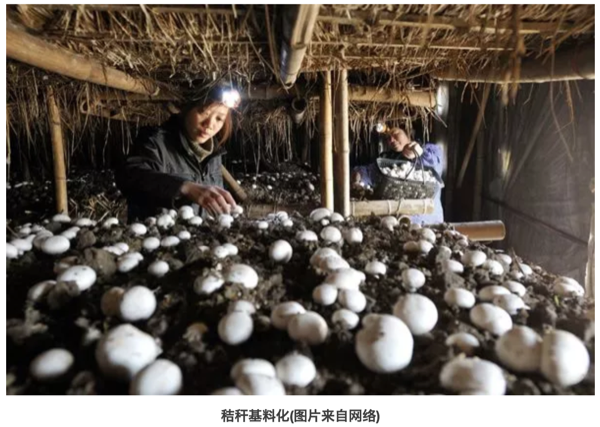
3.6.1 结语
据悉，今年11月份哈尔滨火点问题爆出以后，相关责任人已于近日被环保部约谈，东北秸秆问题治理的机遇和挑战也随之而来。秸秆燃烧这种事，连遥感卫星都看得到，还怕执法部门不知道吗?小秸秆、大问题!希望所有的环保责任人能够直面问题，应对挑战。在关注大动向时，不忘记身边还有这样的“小事情”也同样需要我们的努力!
作者：胜利屯支书 校稿：广播站王站长、柴胡半夏苏 编辑：竹而乐
3.7 VOC减排——大气治理的新挑战
3.7.1 前言
“今天空气质量怎么样？适不适合户外活动？”关注空气质量已经成了人们日常生活的一部分。由于人口增长和工业及经济的快速发展，人类在生活和生产中向大气中排放的污染物量也日渐增多，主要包括二氧化硫、氮氧化物、烟粉尘等颗粒物、挥发性有机化合物（Volatile organic compounds，VOCs）等等，而由此引发的大气污染问题也层出不穷：除了被热议的灰霾，酸雨、温室效应、光化学烟雾、臭氧层破坏、有毒物质扩散等也不容小觑。随着《大气污染防治行动计划》的实施，我国对二氧化硫、氮氧化物、烟粉尘排放控制取得明显进展，但VOCs防治工作相对滞后。目前，VOCs减排已经成为大气污染防治的重点。VOCs是什么？对于局外人来说，可能非常陌生，但在大气治理的圈子内，它已经火的不要不要了。那么，挥发性有机物到底是何方神物，会引起如此大的关注？
3.7.2 VOCs是何物
3.7.2.1 VOCs的定义
学术界对于VOCs的定义是指沸点在50~260℃，室温下饱和蒸汽压超过133.32Pa的易挥发性有机化合物。简单点说，挥发性有机物首先是有机物，然后这种有机物容易由液态转为气态物质进入环境空气中。举个例子，装修完之后，很多朋友会关心甲醛的问题。甲醛是胶粘剂的主要成分，板材中残留的和未参与反应的甲醛会逐渐向周围环境释放，甲醛就是生活中最常见的VOC。除了甲醛，生活中接触到的油漆、汽油等都含有VOCs。

VOCs之所以被关注、被研究、被减排，就不得不说说它的危害。VOCs不仅危害环境，而且危害身体。一方面，VOCs是大气环境中光化学反应的前体，在阳光照射等特定条件下，会与环境空气中的化学物质，发生一系列光化学反应，生成臭氧，而形成光化学烟雾。同时，VOCs也是灰霾重要的前体物质，通过对细颗粒物（PM2.5）源解析，大气中VOCs在PM2.5中的比重占20~30%，还有部分PM2.5由VOCs转化而来。

另一方面，大多数的挥发性有机物均有病理毒性，都对人体各器官组织有较大的危害作用。以甲醛为例，其在室内达到一定浓度，可引起眼红、眼痒、咽喉不适或疼痛等症状。

VOCs排放源主要包括自然源和人为源。自然源主要为植被排放、森林火灾、野生动物排放和湿地厌氧过程等，属自然界的正常规律，源和汇处于平衡状态。而人为源大致可分为工业源、生活源、农业源和移动源。有调查报道，我国VOCs的工业源和交通源为主要的人为源，分别占43%和28%。

其中工业源排放企业涉及的行业有电子信息、纺织印染、石油化工、家具、木材加工、塑料橡胶制品加工、包装印刷、制药等，这些行业也正是目前我国主流工业。正因为人类活动，越来越多的VOCs进入大气中，在环境空气中的累积，打破了自然界VOCs源和汇的平衡。

1940年至1960年间，美国洛杉矶多次发生光化学烟雾事件。在1952年12月的一次光化学烟雾事件中，洛杉矶市65岁以上的老人死亡400多人。1955年9月，由于大气污染和高温，短短两天之内，65岁以上的老人又死亡400余人，许多人出现眼睛痛、头痛、呼吸困难等症状甚至死亡。事件的主要原因是汽车尾气排放了大量的碳氢化合物，在阳光照射下，发生光化学反应，产生有毒气体。这是人类首次认识到VOCs的严重危害，因此，洛杉矶对VOCs的关注走在了世界的前列。1963年，美国以《清洁空气法》的规定为基本依据，要求卫生教育福利部处理空气污染问题，明确机动车对空气污染的影响，并通过环境保护署制定和颁布限值VOCs污染排放的一系列标准，指导全国执行VOCs排放限值。1970年7月，日本东京出现了光化学烟雾现象，几所大学连续出现学生眼睛疼痛、呕吐等现象。因此，日本在VOCs污染排放方面的关注也比较早。

3.7.3 VOCs的减排之路
3.7.3.1 国家层面
我国尚未出现过VOCs污染事件，因此对其关注较晚，2000年，《中华人民共和国大气污染防治法》中仅有诸如有机烃类尾气、恶臭气体、有毒有害气体、油烟等类似概念。
随着灰霾问题的深入研究和环境空气中臭氧浓度升高问题，VOCs逐渐被重视。为改善大气环境质量，促进VOCs削减，我国出台了一系列的政策。2013年，国务院出台《大气污染防治行动计划》，明确要对石化、有机化工、表面涂装、包装印刷等行业实施VOCs综合整治，全国范围内的VOCs减排正式启动。同年，环境保护部编制了《挥发性有机物（VOCs）污染防治技术政策》，为VOCs减排提供了技术规范支持。2015年8月29日第十二届全国人大常委会第十六次会议通过了《中华人民共和国大气污染防治法》，自2000年修订以来，首次增加对VOCs控制要求，从此VOCs减排有了法律依据。这些政策的颁布，从计划到技术、再到立法，逐渐指明我国VOCs减排方向。
在部门规章方面，国家发改委、环保部、财政部、工信部、质检总局、能源局等部委相继出台了有针对性的VOCs污染防治相关文件。各部门相互配合，共同打好VOCs减排攻坚战。
在技术标准方面，我国《大气污染物综合排放标准》（GB162972-1996）对14类VOCs规定了最高允许排放浓度、最高允许排放速率和无组织排放限值，其中包括甲醛、苯、甲苯、二甲苯等挥发性有机物。针对不同的有机污染物排放源以及污染源和环境空气中VOCs的监测技术，截止到2017年，环保部总共制订了15个涉及VOCs的排放标准和20个监测技术方法。从标准实施年限来看，2010年以前，只有3个排放标准和8个监测技术方法，其他都是近几年开始实施。技术标准的制定，为VOCs减排提供了监测和排放依据。
3.7.3.2 地方层面
为积极推动VOCs减排，各地结合地方实际，出台了一系列相关的政策法规和标准方法。表 1列举了北京和江苏省的VOCs污染防治政策。由表 1可见，我国地方从2010年前后，开始加强对VOCs进行管控。近一两年，VOCs污染防治成为各地大气防治的重点工作，各地不断完善VOCs减排政策措施。
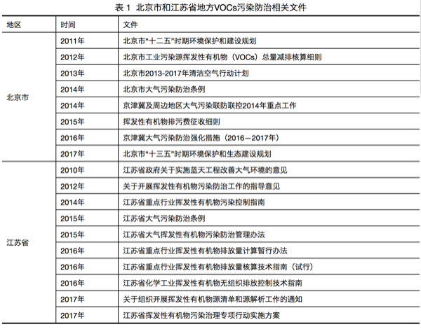
在技术标准方面，国内出台VOCs排放标准的省市并不多，以北京、江苏、浙江和广东为例，各地根据当地的产业特点，制定了相关VOCs排放标准。近两三年，北京连续制定了12项地方排放标准，涉及的行业有印刷、家具制造、炼油和石油化工、汽车、工业涂装和建筑涂料等；江苏重点针对化学工业和表面涂装行业，制定了相关地方排放标准；浙江以化学合成制药、制鞋、化学涂装、纺织染整行业为重点行业；广东以集装箱制造和电子行业为重点行业。
3.7.4 VOCs减排技术和挑战
对VOCs减排的主要技术思路是源头控制和末端治理。简单的说，源头控制就是从原料开始，减少VOCs的产生。末端治理，顾名思义，将产生的VOCs进行最终的销毁。有两类基本技术，一类是回收技术，对排放的VOCs进行提纯处理，再资源化循环利用。主要包括吸收、吸附、冷凝和膜分离方法等技术。另一类是销毁技术，将排放的VOCs分解化合转化为其他无毒无害的物质。主要包括活性炭吸附、低温等离子、热力燃烧、催化燃烧等技术。
涉及VOCs排放的行业众多，污染物种类繁多，废气成分复杂，因此，在对VOCs减排时，要考虑技术上有效、经济上可行，往往这两者很难平衡，这也是VOCs减排面临的最大的挑战。
3.7.5 小结
因此，虽然我国对VOCs的管控起步较晚，为改善环境空气质量，近年来，我国已将VOCs减排作为一项重点工作，出台了相应的法律、法规、政策、技术规范等，并迅速形成一套体系，为VOCs污染防控指明了方向，提供了支撑和保障。
“大家非常关心中国会不会发生光化学烟雾事件，中国政府也高度关注。我们组织过专家分析，世界历史上发达国家发生的光化学烟雾一般臭氧浓度都达到了600以上，个别城市2000以上。中国的臭氧浓度远低于此，所以中国现在和将来不会、也极少可能会发生光化学烟雾事件。”引用环保部大气环境管理司司长刘炳江的一段话，作为总结，相信我国VOCs减排之路，对环境改善有重要的意义。
作者：远方老友 校稿：广播站王站长、柴胡半夏苏 编辑：栟
3.8 等风来
2000年左右，北京人讨厌风，因为一到大风季节，黄沙滚滚，遮天蔽日。可是近些年来，人们又盼着风，期望风来了，把自己从雾霾中解救出来，一时间“等风来”成了所有人的心声。雾霾和风几乎每年都会在北京的地界干上几场大仗，有时力量悬殊，战争迅速结束；有时势均力敌，展开拉锯战。下面我们详细解析一下双方斗争的形势。
3.8.1 与雾霾的战争
首先我们将北京全市PM2.5（细颗粒物）日平均浓度高于200微克/立方米、持续时间超过2小时的污染状况定义为一次重污染事件，2013年8月到2014年8月期间，我们共观察到六次重污染事件，分别为2013年10月28日（265.59微克/立方米）、2013年12月8日（202.63微克/立方米）、2014年1月23日（233.71微克/立方米）、2014年2月15日（437.15微克/立方米）、2014年2月26日（337.39微克/立方米）和2014年3月27日（234.32微克/立方米）。我们基于GIS软件，通过克里金差值方法对这六次重污染过程形成和消散过程进行了模拟。
3.8.2 雾霾的胜利
北京PM2.5重污染事件主要受外源传输影响。从重污染形成的过程看，北京这六次重污染过程中，细颗粒物从北京东南部或者南部，逐渐向城中心和西北部缓慢扩散，最终全城形成重污染（图1）。


在重污染形成期间北京平均风速低于1米/秒，主导风向为南风和东南风（图2），说明北京的PM2.5重污染的形成受外源传输影响较大。主要的污染物来自北京东南部和南部的廊坊、天津和保定等省市。重污染的形成时间一般为3-7天。
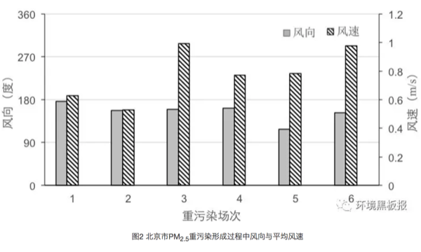
3.8.3 大风的胜利
北京PM2.5重污染的消散主要借助风。北京这六次重污染消散过程中，受风的影响，细颗粒物从北京西北部开始，逐渐向城中心和东南部推移，最终实现全城PM2.5消散（图3）。在此期间北京平均风速为2.5米/秒，而主导风向为西北风和北风为主，只有一次为南风。从模拟结果看，北京的细颗粒物被西北风一分为二，之后在向东北和西南逐渐扩散，直至完全消散。说明北京的PM2.5重污染的消散主要依赖于西北风的影响，而且平均风力为2.5米/秒（图4）。重污染的消散过程比较迅速，整个消散过程时间一般在6-11个小时，其中消散最快的一次，出现在2014年2月26日，全市平均PM2.5浓度从431微克/立方米降到21微克/立方米，仅用了6个小时，期间平均风速为3.2 米/秒，主导风向为西北风。其中最慢的一次（2014年2月17日）持续了18个小时。主导风向为东南风，风力2.4米/秒。可见，北京PM2.5的消散过程与风向和风力有密切关系。

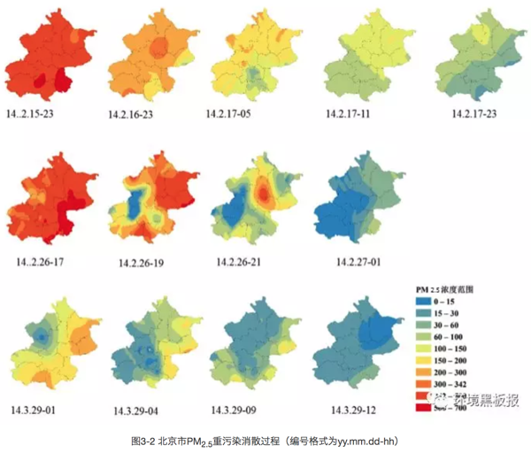

总体看来，风速1米/秒是一个坎，风速小于1米/秒，则容易形成雾霾累积；当风速大于1米/秒，重污染容易扩散，尤其是西北风。
3.8.4 势均力敌
2018年1月13-17日，京津冀及周边地区经历了一次大范围重污染过程，污染范围包括河北省、山西省、山东省和河南省等城市全部或者部分地区。石家庄市是受重污染影响较大的城市之一，截止到1月21日0时，本次中污染石家庄市出现了164个小时的重度污染和90个小时严重污染（数据来源于网络，未经审核）。

石家庄市从13日凌晨开始空气质量逐步转差，污染物浓度波动上升（图5）。13日5时达到重度污染， 14日6时，污染物逐渐累积，11时达到严重污染。16日14时至17日7时空气质量出现短时改善，部分时段降至中度污染以下水平。此后空气质量继续恶化，重污染持续，但污染程度轻于第一次累积过程。1月18日15时，再次得到短时缓解，之后污染物浓度继续升高，全市PM2.5小时平均值最高值出现在19日12时，达到317微克/立方米。之后迅速下降。1月19日16时，下降到最低值，为117微克/立方米。之后污染物继续累积，1月21日空气质量好转。截止到目前，重污染源已经持续393个小时，其中，有164个小时的重度污染和90个小时严重污染（数据来源于网络，未经审核）。
在此过程中，风速与空气污染指数呈现明显的负相关关系（图5）。风与霾此消彼长，在石家庄市展开拉锯战，持续时间已经超过一周。中间几次过程，主要风速大于1米/秒，空气污染就会得到改善。一旦面临静风时刻，污染物开始逐渐累积。
3.8.5 雾霾攻坚—源头把控
在污染治理上，我们要做的还有很多，默默的等风来，不是真正的解决问题的方法。根据贺克斌院士的观点，城市治霾的根本在于管住污染源。2017年8月18日《京津冀及周边地区2017-2018年秋冬季大气污染综合治理攻坚行动方案》（环大气〔2017〕110号）实施以来，在京津冀及周边地区2+26城市，坚持问题导向，把稳固“散乱污”企业及集群综合整治成果和高架源稳定达标排放作为坚守阵地，把压煤减排、提标改造、错峰生产作为主攻方向，把重污染天气妥善应对作为重要突破口，加强联防联控，严格执法监管，强化督察问责，全面实施攻坚行动，动员全民共同应对重污染天气。“攻坚行动”方案规定主要完成的11项任务中有8项与污染源管控有关。截止到2017年12月PM2.5浓度削减幅度最大的前六位城市是石家庄、北京、廊坊、保定、鹤壁和安阳市，与去年同期相比，PM2.5浓度削减幅度均在40%以上，可见污染源管控才是真正解决雾霾的根本手段。
等风来不如去追风，幸福都是奋斗出来的，总有一天我们能切实做到污染源有效管控，从源头上减少排放，雾霾问题才能从根本上得到解决，相信我们生活的环境会越来越好。
作者：大石 校稿：看透，胜利屯屯长 编辑：丫头晚安
3.9 像设计者一样思考
网络时代对于信息交换几乎可以说是瞬间完成的，但有时候也会发现效率很低，几乎所有的网络兴趣社区都会提示在开帖前要先搜索，确认没人问过再发表。SO更是在你输完问题提交前先善意列出来跟输入问题相关的问题让你检查，但即使如此，永远都会有人完全不顾提示强行重复提问。不过实话说，到网上去问已经算不错的了，你还可以装看不见，现实中很多人会有神奇的思维定势，只要遇到某主题相关问题就直接一个电话过去问人，连搜索都懒得用。对于这类人，冥顽不化的就拉黑吧，他不珍惜你的时间，你也没必要当他的hao123.

不过，也有一类人是确实不会提问或者缘木求鱼，有时候眼睁睁看着他在用低效的方式在死磕问题也挺可怜的，但也很清楚有时候很多基础缺失导致其看问题总是像黑箱测试或盲人摸象，一两句解释不清楚。其实我在很多问题上经常也就是这个阶段，不过我有一个常用的思考技巧，能应对80%的提问场合，特别是工具使用问题，那就是像设计者一样思考。
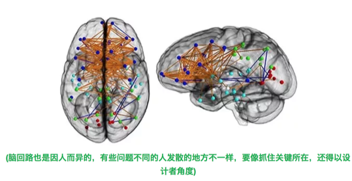
你在用一样工具时，要思考为什么要用，这是基本需求，你的这个需求跟工具设计者看到的应该差不多。然后就是思考怎么实现，到这一步你不用考虑细节，就从逻辑上推导，如果走得通，你再去看这个工具就会有一种跟设计者对话的感觉。当你觉得某个功能肯定会被考虑时基本就能发现这个工具也确实设计了这一部分，在这样的思考环境下，你其实不用看说明书就可以操作，只要你相信那个设计者跟你一样也是个务实的人就一定能想到一起去。
这个思维是我很小的时候修打火机想明白的，打火机打不着火，先思考它如何打火，要有可燃物并且创造一个小区间让其在其中达到可燃浓度，此时输入一个高能的火花就点燃了。那么点不着火的打火机要么引燃的火石或电火花出了问题，要么没有可燃物了，要么就是没有小区间也就是外界气流影响比较大。基于这个设计点火原理，我修好过好几个打火机，然后放鞭炮把手炸伤了。
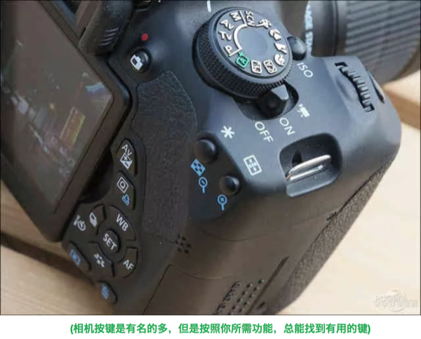
这个思维对于家电的使用也是通用的，我很少看说明书，因为一般设计良好的家电闭着眼都可以操作，如果做不到这一点也就没必要买了给自己添堵。后来做科研接触一些分析仪器，也几乎别人演示一遍就可以上手，因为很多功能是逻辑上一定存在且设计者一定会考虑的，越是常见的功能就越显眼，如果费了半天劲都找不到，那要么是设计有问题，要么就是找错地方了。只要你相信地球是圆的，就应该相信所有设计者都比你还怕麻烦，这样就总是能很容易地找到逻辑上应该在那里的东西。
另一个应用场景是参加过高考的考生都非常熟悉的，那就是考试。每当拿到一张卷子，很多题其实从题目设计者角度就能猜到他想考哪个点，因为如果不这么出题，就无法考察学生对知识点的理解。这个技巧可能是唯数不多的应试教育优点，特别是拿来读书时非常好用，很多书读的时候把自己想象成写书的人往往能体会到作者很多的小心思，高明的作者非常善于引导读者，但高明的读者总能破解这种引导来发现作者可能自己都没发现或刻意掩盖的视角。这个对解读所谓意见领袖的看法特别好使，你把自己想象成一个有进取心的意见领袖，那么很自然地就会去蹭社会热点。在我看来，所有跳不出自己角色意识的人都会最终在某些方面被别人引导，或者是偶像，或者是朝阳仁波切。
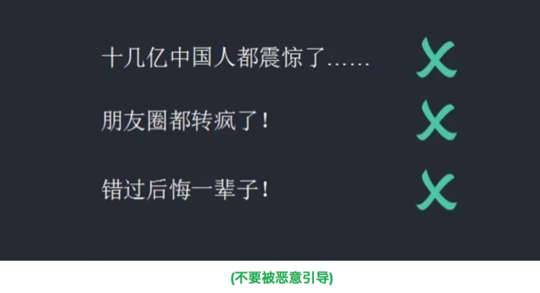
但其实更常见的应用场景就是我们每天都用的手机应用跟电脑软件，如果你懂点编程，那么绝大多数问题都会意识到在文档里一定写过了，因为如果没有那么这个设计者就不合格。但更重要的是不仅仅模仿一个设计者的思路，而是干脆就成为一个设计者，这个是我认为这个信息时代最大的红利，作为一个设计者你所需的所有原材料网上都有，怎么组合及组合后的乐趣是设计者独享的。好比炒菜，油盐酱醋跟火候如何拿捏及创作一份独有配方的佳肴是非常吸引人的，当然这个创作的过程不包括刷碗。
我举个例子，之前公众号曾经发过一张表示PM2.5浓度变化的日历图，可能很多人觉得是用专用软件做的，其实并不是。这个图是用R语言里一些基础绘图命令烹制出来的，最原始版本也是网上搜到的。但是在搜索过程中你会发现有些人是就事论事，单一代码解决单一问题，这样到下一个问题又得重来，因为数据结构会变化。此时作为一个设计者需要做的就是尽可能多的考虑代码的通用性然后打包为一个面向年度日均数据绘图的函数，这样不论你以后是画PM2.5 还是硫氧化物，只需要重复调用函数并指定数据就足够了。
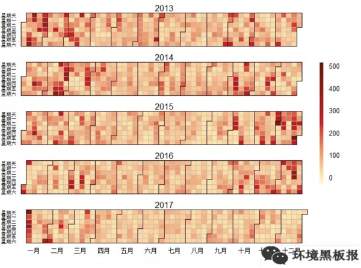
其实科研中也需要设计者思维，如果同样的分析工作需要反复做，那就写个带循环或终止条件的函数让机器做;如果一组函数经常前后衔接属于同一主题，那就把它们打包成软件;如果一个问题经常被问，就写个博客记录公布下;如果一类问题经常被问，就写本带章节的书;如果类似的文献都在讨论同一个问题，就把自己想象成一个期刊特辑的编辑;想跟导师聊项目进展，就想象下你导师是如何在每年二三月份憋红了脸写基金;跟牛人打交道，要用让他们觉得值得尊敬的方式交流，最简单的理解就是让自己先成为牛人…
把某件事投入的精力转化成设计者的产出是很不错的训练，如果没人提示过你，那就自己提示自己。我熟悉的强者大都自己给自己定目标提问题，本质上他们都把自己看作了设计者并推动世界的改变，他们不是不惑，而是很清楚自己追寻的问题只能自己找答案，这可能就是强者的荣耀吧。成为设计者或者开始用设计者思维这一步是我目前能体会到的人与人见识差距的最大源泉，而设计者总是站在时代的浪潮之巅。
作者：yufree 图片：次要男主角 编辑：竹而乐
3.10 你喝的可能是“有毒”的自来水？！
3.10.1 水发生了什么？——水污染
地球是个名副其实的“水球”，水资源总储量约为1.36×109km3，但除去海洋等咸水资源外，只有2.5%为淡水。淡水又主要以冰川和深层地下水的形式存在，储存在河流湖泊中能被人类所利用的淡水仅占全世界总储水量的0.3%， 然而，这极为稀有的淡水，却面临着另外一个不可忽视的严峻问题——水污染。水污染问题使得人类“获得安全可靠的饮用水”这一基本诉求难上加难。

联合国组织秘书长在2002年世界水日发布的新闻稿估计， 全世界有11亿人无法获得安全饮用水。中国的水污染问题尤其严重，如图所示，中国绝大部分地区的饮用水仅满足最低标准，在中南部有些地区，饮用水水质更加糟糕。

3.10.2 引起水污染的罪魁祸首是谁？——污染物
近些年来，全国各地水污染事件频发，如2012年12月，位于山西省长治市境内的煤化工厂发生苯胺泄漏入河事件，导致河北省邯郸市发生停水和居民抢购瓶装水，同时由于泄漏苯胺已随河水流出省外，河流下游的河南省安阳市境内红旗渠等部分水体亦检出超标的苯胺、挥发酚等污染物。
综合所有水污染事件可得出，引起水污染的污染物有很多，通常可分为三大类，即物理性、化学性和生物性污染物。
物理性污染物包括悬浮物、热污染物和放射性污染物。其中放射性污染物危害最大, 但一般存在于局部地区。化学性污染物包括有机和无机化合物， 该类化合物近些年来在环境水体中频繁被检出。生物性污染物包括细菌、病毒和寄生虫。随着痕量分析技术的发展，至今从源水中检出的化学性污染物已达数千种以上。在所有的化学性污染物中，微量有机污染物逐渐引起人们的广泛关注，并已成为世界几乎所有地区水污染的首要污染物。
微量污染物是指那些广泛使用但通常在很低或者极低浓度水平就能影响自然环境生物化学过程的有机污染物，包括人工化学合成品，比如活性药物成分、食品添加剂、化妆品成分和洗涤剂成分，以及天然存在的一些物质如激素、生物毒素等。近年来，一些新型微量污染物，例如药物与个人护理品（PPCPs）、内分泌干扰物（EDCs）、全氟类化合物（PFCs）等的环境污染及潜在影响问题已成为各国学者和公众关注的焦点。很多微量污染物具有较强的环境持久性、生物活性、生物累积性和难降解性，如果长期暴露于环境中，对生态系统和人类健康将带来难以预测的潜在风险。我国是各类工业品、药品的生产和消耗大国，工业和人口密集，能源和资源利用率仍然较低，高强度的工业化学品生产、使用和废弃会产生严重的环境效应，因此微量污染物的环境残留问题更是不容忽视。

3.10.3 污水处理厂可以使水变干净么？——未必！
为了去除环境水体中的微量污染物，人们寄希望于现有的污水处理工艺。然而，当被污染的水经过污水处理厂处理之后，真的可以变干净么？答案却是未必！
- 微量污染物的去除很难达到100%
近年来，欧盟和一些发达国家开始高度关注水环境中的微量污染物问题，研究发现城市污水中化学物质普遍存在，有些是常规污水处理工艺难以去除的，因此污水排放是河流水体中化学物质的重要来源。
城镇污水处理厂的工艺选择主要基于排放标准中COD、BOD5、NH3-N、TN、TP等常规污染物指标的稳定达标。另外值得注意的一点是，污水中的许多痕量污染物具有一定的毒性，对活性污泥中的微生物易产生一定的抵抗和抑制作用，因此，目前常用的污水处理工艺如活性污泥等对痕量污染物的去除并不能达到100%。同时，在污水处理工艺流程中，部分微量污染物通过活性污泥吸附或者生物降解、水解等得到去除，但许多亲水性物质不能吸附到活性污泥上，导致出水仍然残留相对较高的浓度，释放到接纳水体中，引起水生生物的慢性接触。需要关注的是，某些微量污染物具有中等或较强的疏水性，易于被活性污泥絮凝吸附；但由于仅仅是相的转移而不是降解，这部分被吸附的微量污染物往往随着污泥的处理处置过程进入地表水体或土壤环境中，直接或间接造成潜在的环境与健康风险。城镇污水处理厂出水及污泥是环境中不可忽视的痕量有机污染物的源。
- 残存的微量污染物可能在处理过程中发生二次反应生成更毒的物质
在当前的污水处理厂中，化学降解方法包括光催化氧化，臭氧化和氯化被认为是有效处理微量有机污染物的几种工艺。然而，虽然微量污染物可以在一定程度上被去除，但由于有毒转化产物的生成，使得其环境健康风险却未必消失。有各种报道称，微量污染物在化学降解过程中可能转化成其他的副产物，使得污水处理厂的出水毒性反而较处理之前增加， 这些转化产物最终进入地表水，甚至到达饮用水，对水生环境及人体健康造成更高的生态及健康风险。有研究表明，这些有毒的转化产物可能破坏内分泌干扰系统，干扰人类和动物的激素系统功能。此外，有些有毒转化污染物还可能致癌，致突变和引起生殖系统的病变。例如，在饮用水氯化处理过程中， 有大量的消毒副产物如三卤甲烷，卤乙酸及亚氯酸盐等生成，这些消毒副产物已被证实在较低的剂量下即可以诱发肝癌和肾癌，并可降低精子的自动力，影响生殖系统的发育。
换句话说，人们原本寄希望于去除有毒的微量污染物从而得到干净安全的饮用水，这一目的不仅难以达到，相反，被污染的水在经过污水处理厂处理后可能生成更加有毒的转化产物，使得其环境和健康风险可能更高！更为糟糕的是，民众对于这一现象知之甚少，以为自己饮用的是一杯经过处理之后的干净安全的饮用水，实则却是一杯含有有毒化学物质的“不健康水”！
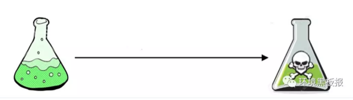
3.10.4 小结
中国约50%的水源受到微量有机化合物及重金属离子等物质的污染，令人堪忧的是，目前全国县以上4000多家自来水厂中，95%以上仍然使用传统水处理工艺，这些工艺在处理有机化合物及重金属离子时，处理效果并不理想，同时，即使这些传统处理工艺能够在一定程度上去除该类污染物，更加有毒的转化产物也可能会生成使得自来水面临更高的健康风险，而普通民众对于这一事实却无处知晓。
水污染问题的确是个相当棘手的大问题，利益关系错综复杂，要完全改善也并非一朝一夕，是一个缓慢长远的过程! 笔者认为目前的水污染治理还存在诸多问题，首先，水质检测不够专业认真。几乎所有的饮用水专家和学者都认为中国的水质存在严重的安全隐患，但是在众多自来水厂的报告中，却几乎没有一家自来水厂自检水质不合格。这一看似矛盾的现象说明很多自来水厂在水质检测上并不认真，很多时候仅是马马虎虎测一些无关痛痒的参数告知民众自来水是安全的，但是背后真正的问题并没有被揭示出来。其次，污染控制不严，执法力度不够。自来水水质优，首先应得益于严格的水源控制。为保障水源安全，应建立水源保护区，在保护地带内，禁止一切有污染物质的进入，违者应被加以重罚。但我国目前的情况却是，许多工厂非法排污造成水源污染，但是当民众给所属环保部门报告时，监管部门大多并未作出积极的反应，或者即使作出反应，也仅是隔靴搔痒，并未真正杜绝该类地下排污问题的发生。
2015年“水十条”落地，预示着政府将握紧拳头向水污染宣战，笔者真心希望政府在以上问题上加大监管力度，对故意排污造成水污染的当事者予以重罚，同时对环保部门及水质检测部门加以规范，以期对水质状况获得最真实的第一手数据，为日后的水污染治理提供重要的观测基础。
作为与水息息相关的我们每一个人，除了等待政府可以更快更好的解决水污染问题，在日常用水中时要及时观察生活用水的水质变化，看其是否出现异常颜色或浑浊，有无异物及异味等。饮水前先放水，让水流一会儿，将管道中的“死水”流出再饮用。另外如有条件，建议增加具备反渗透膜过滤的净水器。
作者：李立平（博士，毕业于香港科技大学，从事水处理领域近7年，在相关研究领域发表学术论文数篇） 校稿：yufree，大石 编辑：丫头晚安
3.11 环境保护，保护优先
3.11.1 缘起
2015年初春两会期间，时任环境保护部部长陈吉宁在说明环境保护与经济增长之间关系时用了环境库兹涅茨曲线概念，当时其表示我国环境污染强度已超过历史上最高的国家，成为名副其实的“第一”，我国面临前所未有的经济发展和环境保护的矛盾。
环境库兹涅茨曲线成为环境领域热点问题，2年时间过去了，在刚刚召开的两会中审议通过了国务院机构改革方案，组建了生态环境部，生态文明和环境保护被提到前所未有的高度，我国环境保护现在处于环境库兹涅茨曲线的哪里？环境保护该如何发展？
回答这些问题，需要我们抬起头来，看看前方的路，决定如何走，再撸起袖子加油干。笔者才疏学浅，尝试回答这些问题，见解如有不对，敬请谅解。
3.11.2 什么是环境库兹涅茨曲线？
环境库兹涅茨曲线概念引申于库兹涅茨曲线(Kuznets Curve)。
百度百科告诉我，库兹涅茨曲线是美国经济学家库兹涅茨于上世纪90年代提出的理论，库兹涅茨用实证数据表明收入不均现象随着经济增长先升后降，呈现倒U型曲线关系。
随后该概念被引入环境领域，通过研究发达国家经济发展水平与环境污染直接的关系发现，当一个国家经济发展水平较低的时候，环境污染的程度较轻，但是随着人均收入的增加，环境污染由低趋高，环境恶化程度随经济的增长而加剧。
当经济发展达到一定水平后，也就是说，到达某个临界点或称“拐点”以后，随着人均收入的进一步增加，环境污染又由高趋低，其环境污染的程度逐渐减缓，环境质量逐渐得到改善。
这种现象被称为环境库兹涅茨曲线（提示一下：环境库兹涅茨曲线是倒U型曲线，这是只是大致意义上的，并不是说要严格呈倒U型）。
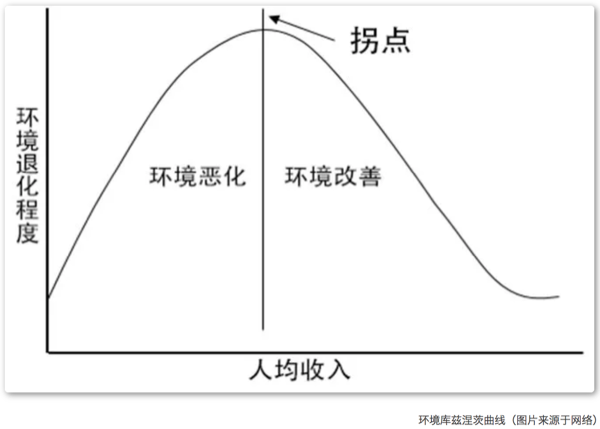
3.11.3 环境库兹涅茨曲线拐点区间已现
改革开放以来，我们经济水平持续走高，而无可避免地，中国很多地方出现了局域性环境污染，近年来甚至一度爆发全国范围内的严重环境污染，如笼罩在京津冀地区的大气雾霾。
改革开放接近40年，中国环境治理主要以末端治理为主，也取得了一定成果。虽然我国整体环境质量仍未见好转，生态环境保护短板问题突出，但是统计数据显示环境污染物排放整体上已来到拐点区间，其中部分传统污染物已经越过了环境库兹涅茨曲线拐点，非传统污染物排放也趋近拐点区间。
笔者作为应对气候变化工作从事者，对应对气候变化领域数据较为熟悉，这里以应对气候变化工作最具有代表性的表征指标碳排放量来举例说明。
我国碳排放量与人均GDP的关系可以很好地解释环境库兹涅茨曲线。
1980年前后，我国人均GDP仅有300美元左右，随着我国经济迅速增长，碳排放量也水涨船高，我国人均GDP达到1000美元、3000美元，碳排放量分别达到了27亿吨、66亿吨。
当人均GDP超过5000美元，我国政府逐渐重视生态文明，强调经济转型升级，试图用更小的能源消费、环境代价获取更多的经济增长。
这段时间我国的单位GDP碳强度大幅度下降，到2016年前后，我国人均GDP超过7000美元，碳排放量缓增至90亿吨左右。
人均7000美元已来到环境库兹涅茨曲线拐点窗口期，碳排放量的增长也十分疲软，甚至有专家判断我国碳排放量已经达到峰值。
而笔者的判断是，不管碳排放是否已经达峰，碳排放应该是到了环境库兹涅茨曲线的拐点区间。

3.11.4 在此拐点，我们要如何走？-保护优先
中国政府在十九大报告中提出到2035年基本实现社会主义现代化，到那时，生态环境根本好转。
如何在未来不到20年内实现该目标呢？办法总比问题多，有些办法更有效果。
发达国家和我国的经济实践证明仅仅依靠技术不能够完全解决环境问题，环境改善更为重要的是要依靠正确的发展方针和政策（这句话不是我说的，是原全国人大环资委主任委员曲格平在接受某家媒体采访时说的，以此作为文献引用吧）。
因此，在环境库兹涅茨曲线拐点的重要窗口期，中国政府应树立“保护优先”的发展战略。
“保护优先”战略指环境保护和经济增长协调发展，把环境保护放在更加突出的位置，甚至在局部地区或某些时间段放在首要位置。
“保护优先”战略是习近平总书记的“绿水青山就是金山银山”科学论断的应有之义。
因为“保护优先”战略不是环境至上，而是对经济增长、社会发展提出了更高的要求。
“保护优先”战略要求正确处理环境与经济之间的关系，彻底改变以牺牲环境、破坏资源为代价的粗放型增长模式，不以牺牲环境为代价去换取一时的经济增长，而是通过转变发展方式、优化经济结构、转换增长动力赢得长期的高质量发展。
“保护优先”战略要求在加强末端治理工作的同时，更加注重源头预防工作和过程控制工作，现阶段政府要加大资金投入鼓励源头预防的技术发展，构建源头预防、过程控制和末端治理一体化的环境污染治理体系。
（保护优先思想参考了原环境科学院院长发表在紫光阁期刊上的文章）
作者：羽青空之蓝 校稿：周宁、爱杯子的王小咖 编辑：泽水之岸 原创图：羽青空之蓝
3.12 “砷”生不息
提起砷（As），可能大家最先想到的就是潘金莲毒死武大郎的砒霜。作为一种毒性较强的环境污染物，砷不仅存在于小说和宫廷剧中，还广泛地分布于岩石、土壤和天然水体中。近年来，关于大米中砷含量超标、婴儿米粉中检测出砷的报道层出不穷，更是将水稻和砷的纠葛推到了风口浪尖。

3.12.1 砷的来源与毒性
砷的来源甚至可能会早于你我的认知。历史上，关于砷的记载最早见于1世纪罗马博物学家普林尼的著作中，即雌黄（一种砷的硫化物）。在自然条件下，砷主要以硫化物、含氧砷酸化合物和金属砷化物等形式存在；并通过地壳运动、火山喷发等过程，从地壳中释放到地壳表层和大气中；随后，伴随岩石矿物的风化过程，被进一步释放到周围的土壤和水体中。工业革命以来，人类活动如矿物开采、工业活动、农业活动以及日常生活垃圾的排放等加速了砷在环境中的扩散，持续地将含砷化合物分散到土壤、水体和大气环境中1。

砷的毒性大小和其存在形式息息相关。砷主要有无机砷和有机砷两种存在形式。其中，有机砷（氧化态）的毒性可以忽略不计，而无机砷毒性强，其中三价砷毒性比五价砷大约60倍,人口服三氧化二砷中毒剂量为5-50mg,致死量为70-180mg。因此，与人体健康相关的各类砷含量的限值通常是指无机砷含量。例如，世界卫生组织制定的无机砷对人的安全上限为“每天每千克体重的砷摄入量不超过2微克”；我国要求每千克大米中无机砷含量不超过150微克2，《婴幼儿谷类辅助食物标准》（GB10769-2010）规定砷含量上限是每千克300微克3。
3.12.2 水稻与砷
为何水稻中砷含量会得到如此广泛的关注？首先是由于我国地处东南亚地区，水稻是我们赖以生存的主要粮食之一；其次，由于水稻田的水淹种植以及水稻本身的特性，让水稻具有高富集砷的“优势”，使得大米中无机砷含量远高于其他谷物类4。目前，科学家已从水稻中发现两种蛋白，水稻可通过它们将不同形态的无机砷吸收至体内。其中，五价砷由于和磷酸盐具有相似的物理化学性质，通过磷酸盐吸收通道进入水稻体内；三价砷则主要通过水通道蛋白吸收进入水稻体内。

提到水稻对砷的吸收，就不得不提“栖息”在水稻根际的高达数以亿计的砷代谢微生物。正是它们影响了水稻土中砷的迁移转化过程，促进或者抑制水稻对砷的吸收5。所谓水稻根际微区，即受水稻根系影响的土壤。在水稻生长旺盛时期，水稻根系不仅可分泌丰富的有机物，还具有较强的泌氧能力，从而促使根际微生物群落更加丰富和多样化。据报道，水稻根际土壤细菌的丰度比非根际土壤可高达一半以上（50.8%）。
3.12.3 砷代谢微生物
砷氧化微生物–水稻根际区“栖息”的各型各色的砷代谢微生物中，砷氧化微生物最为丰富。通常在自然条件下，无机的三价砷被化学氧化的过程是非常缓慢的。但当微生物存在时，由于微生物的三价砷氧化酶的催化作用，三价砷可以被迅速氧化为毒性较低的五价砷。这正是水稻根际砷氧化微生物的职责所在。当水稻根际的三价砷被氧化为五价砷后，不仅砷的毒性被降低，五价砷还易被存在于水稻根表的铁膜吸附，从而降低了砷的迁移性，减少了水稻对砷的吸收。
砷还原微生物–与砷氧化微生物作用“背道而驰”的即砷还原微生物。它们能够将五价砷还原为三价砷。在水稻土中，存在着两种类型的砷还原微生物。其一是可进行体外还原的五价砷呼吸还原微生物，其二是可进行体内还原的五价砷解毒还原微生物。然而不论过程如何，最终结局都是五价砷被还原为毒性较高的三价砷。非但如此，原本被水稻根表铁膜吸附的五价砷也因为还原过程被从矿物表面解吸，并释放到土壤中，增加了水稻吸收砷的风险。
砷甲基化微生物–近年来，除了砷氧化、还原微生物之外，在水稻根际土壤中声名大噪还有另一类微生物：砷甲基化微生物。与氧化、还原微生物仅局限于无机砷形态转化的功能不同，砷甲基化微生物可将无机形态的砷通过甲基化产生有机形态的砷。这部分有机砷（氧化态）毒性远低于无机砷，大大的降低了水稻土中砷的毒性。与此同时，在砷甲基化的过程中，还可产生多种挥发性的气态砷，可将水稻土中的砷挥发至大气中，降低水稻土中砷含量。研究表明，大气中的砷有62%来自于环境的自然挥发过程，其中生物挥发占了自然挥发过程的58%。

这么看来，除了人为因素造成的水稻土砷污染，这些微小的砷代谢生物对水稻土中砷的迁移转化，以及水稻对砷的吸收也贡献了并不微薄的力量。目前，研究者们正在进一步研究如何通过调控这些砷代谢微生物群落的结构，来实现降低水稻对砷吸收的目的，争取有朝一日，让大家可以安心的“民以食为天，食以米为主”。
后记：如何降低砷摄入风险Tips，科学家表示均衡饮食很重要，除了大米，也要多吃面食以及其他谷类作物。此外，据说煮米饭前，先将生米浸泡一晚，然后用过量的水将米煮熟后，弃水食米，可大大降低米中砷的含量。但是，此法会同时降低大米中其他水溶性营养元素含量，并且笔者认为米饭口感会大幅下降，食之如“烂泥”，对食物口感有要求者慎用。
参考文献：
1 Zhu Y-G, Yoshinaga M, Zhao F-J, Rosen BP. Earth abides arsenic biotransformations [J]. Annual Review of Earth and Planetary Sciences, 2014。
2《食品中污染物限量》（GB2762-2005）
3《婴幼儿谷类辅助食物》（GB10769-2010）
4 美国食品药品监督管理局（U.S.Food and Drug Administration, FDA）:Arsenic.
5 Zhang S-Y, Zhao F, Sun G, Su J, Yang X, Li H et al. Diversity and abundance of arsenic biotransformation genes in paddy soils from Southern China [J]. Environmental Science & Technology, 2015.
作者：鱼小张 校稿：广播站王站长、柴胡半夏苏 编辑：李立平